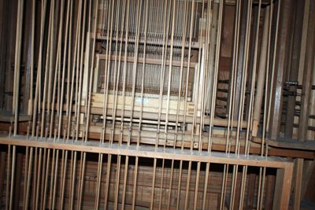
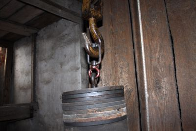
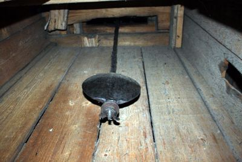
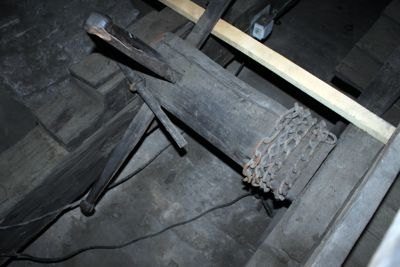
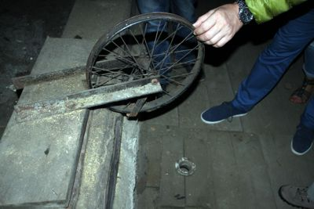
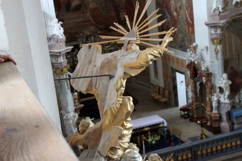
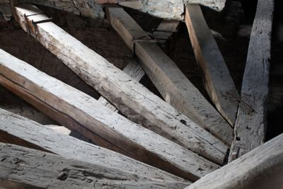
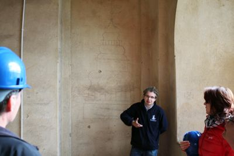
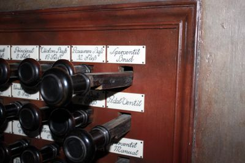
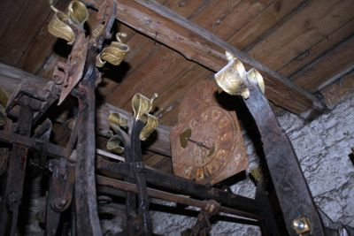
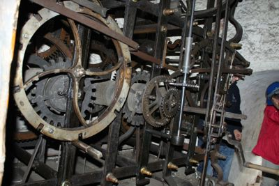
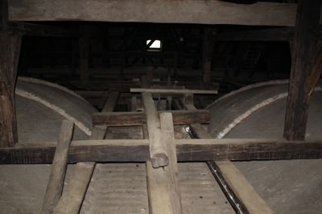
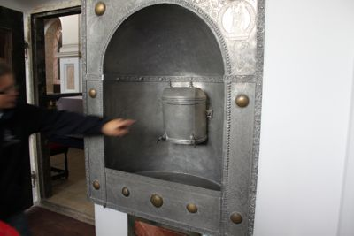
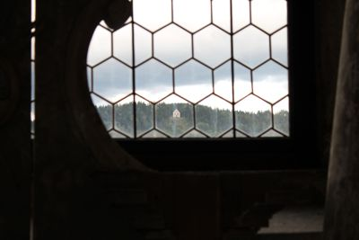
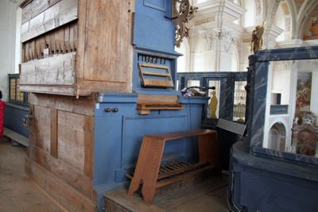
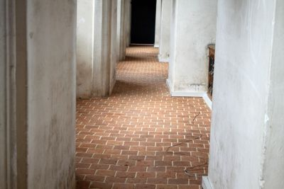
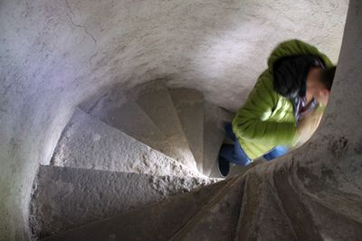
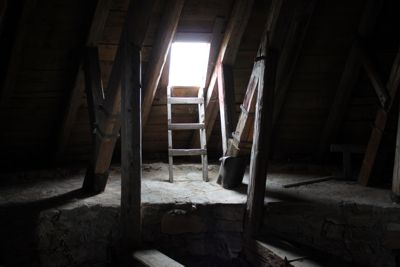
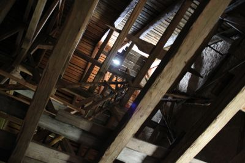
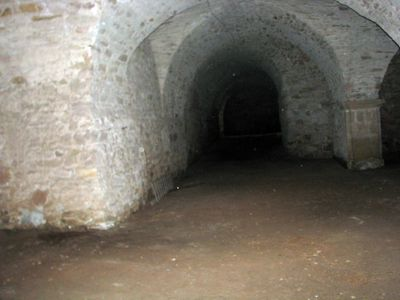
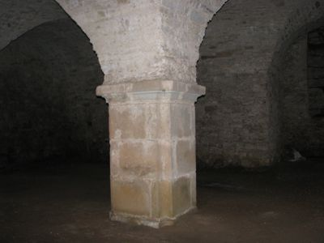
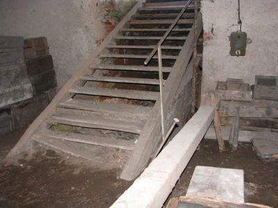
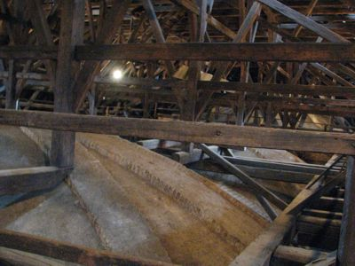
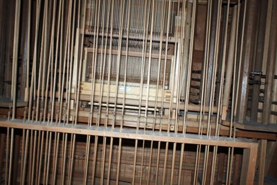
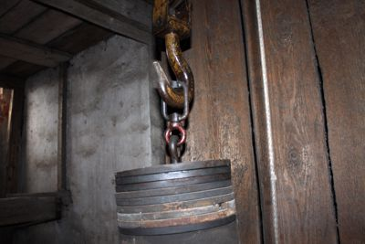
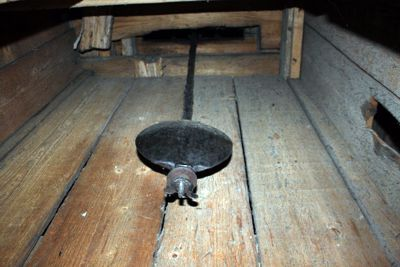
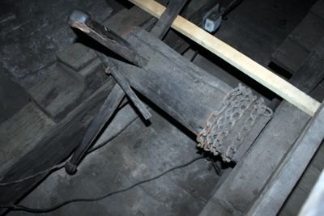
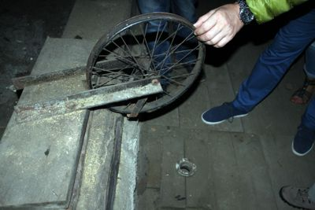
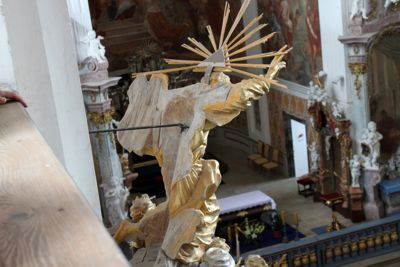
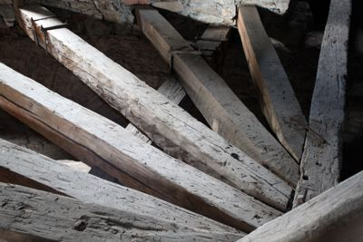
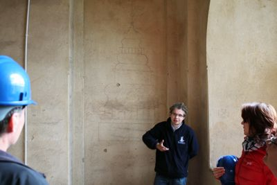
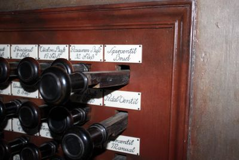
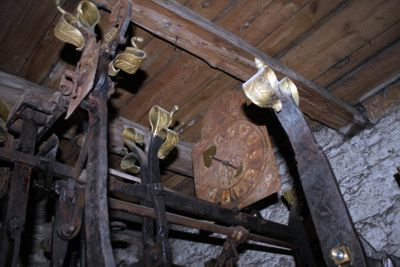
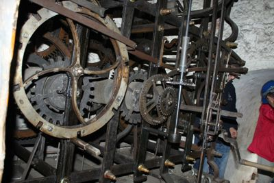
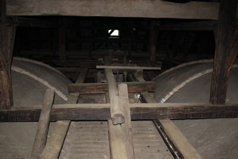
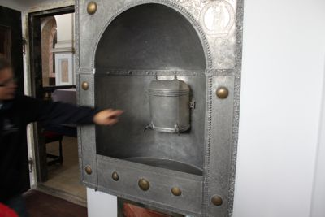
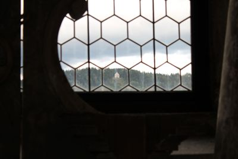
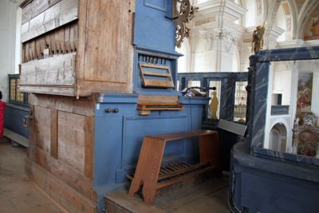
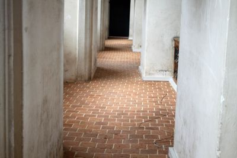
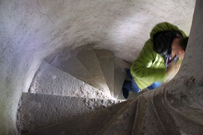
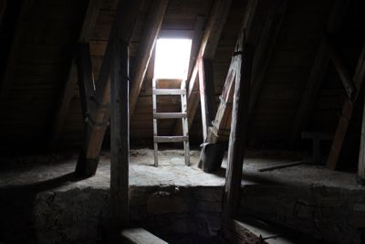
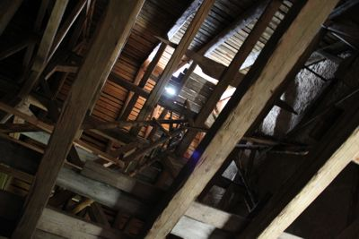
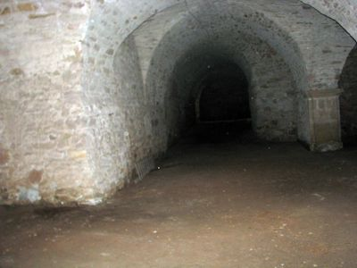
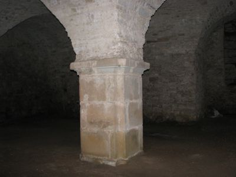
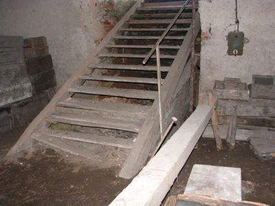
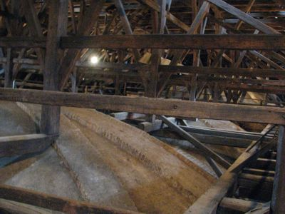
Œladami budowniczych i skarbów krzeszowskich
dodano: 09-09-2014
Zachêcaj¹co brzmi opis wycieczki stronie opactwo.eu: "Szlak "Œladami..." to propozycja dla grup maksymalnie 10 osobowych, które z przewodnikiem mog¹ zobaczyæ niedostêpnie miejsca krzeszowskich koœcio³ów jak strychy czy podziemia. To niezwyk³e przejœcie po ukrytych klatkach schodowych i korytarzach. Zobaczycie miejsce ukrycia czêœci tzw. "berlinki" ale równie¿ miejsce w którym cystersi chowali kosztowne naczynia liturgiczne i kosztownoœci przed grabie¿¹. Niezwyk³e wra¿enia zrobi na odwa¿nych strych bazyliki: konstrukcja dachu i kopu³y ujrzane od góry. Zaplanowaliœmy równie¿ inne niespodzianki.
O tej wycieczce wczeœniej czyta³em w Goœciu Legnickim, pozytywnie wspomina³ te¿ mi o niej kiedyœ Stanis³aw Weso³owski. Oczywiœcie mia³em w planach zapisanie siê na tak¹ wycieczkê - musia³em tylko byæ w Krzeszowie w czasie kiedy bêdzie organizowane kolejne "przejœcie". Okazja nadarzy³a siê 16 sierpnia 2014 roku - telefonicznie zadeklarowa³em udzia³ w wycieczce a potem zap³aci³em 35 z³ i cierpliwie czeka³em o wyznaczonej godzinie przed Obs³ug¹ Pielgrzyma. "Moja" grupa liczy³a tylko piêæ osób. Nasz przewodnik, pan Krystian Michalik, wrêczy³ nam na pocz¹tku gustowne niebieskie kaski i latarki - jak siê potem okaza³o, by³y one przydatne.
Sama wycieczka trwa³a blisko dwie godziny i w najwiêkszym skrócie przebiega³a mniej wiêcej tak: koœció³ œw. Józefa - strych, zakrystia, organy; bazylika: strych, wie¿a zegarowa, mechanizm zegara, organy, ukryta klatka schodowa i skrytka nad kaplic¹ loretañsk¹, podziemia pod transeptem bazyliki. W mojej ocenie wycieczka naprawdê bardzo interesuj¹ca, mo¿na zobaczyæ miejsca normalnie niedostêpne. Poni¿ej kilka moich zdjêæ (chronologii brak).
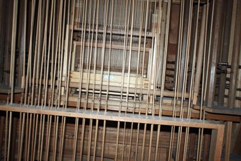
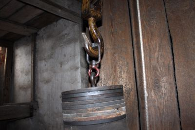
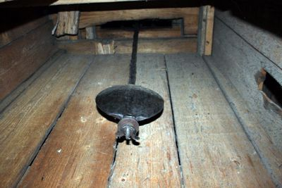
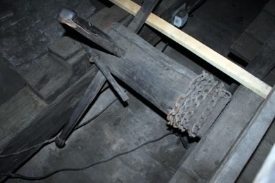
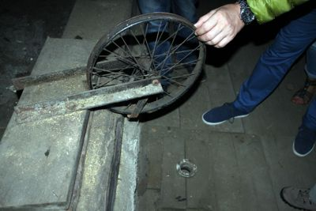
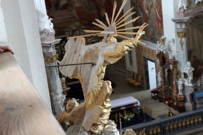
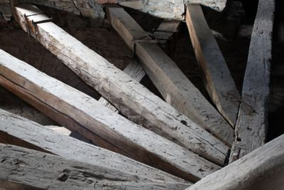
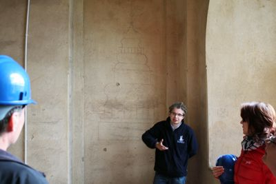
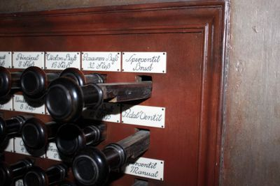
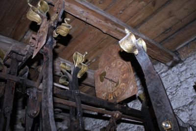
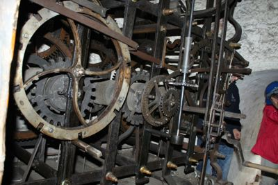
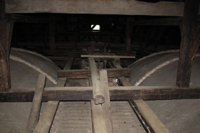
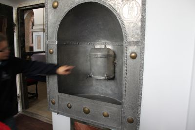
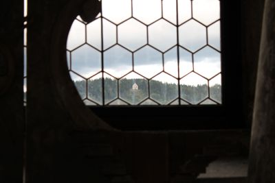
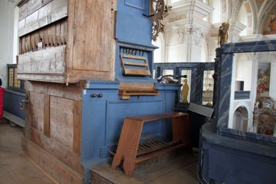
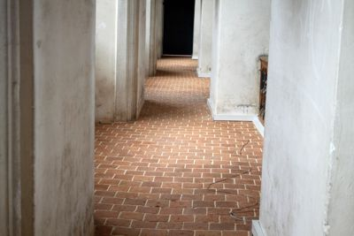
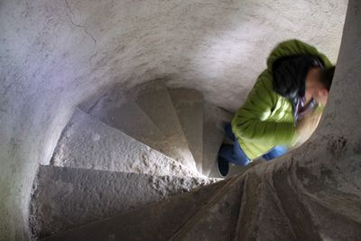
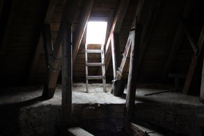
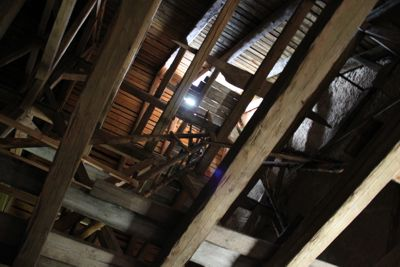
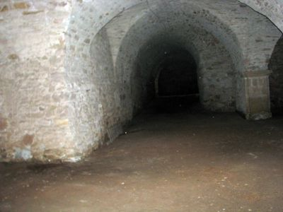
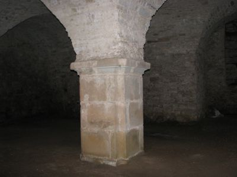
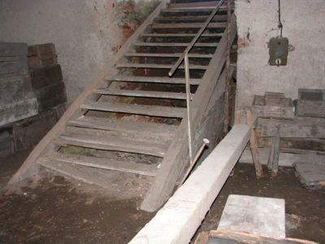
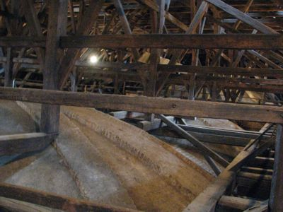